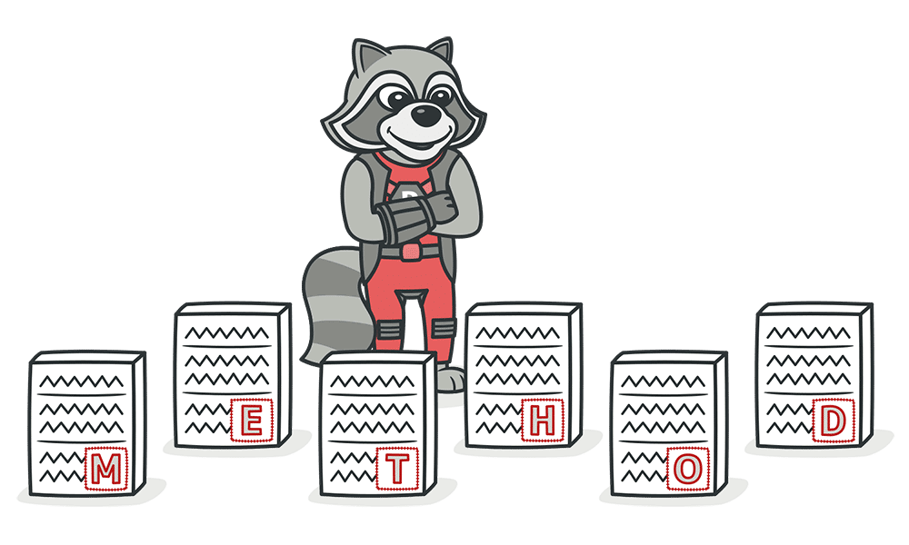

Couplers
Feature EnvyInappropriate IntimacyMessage ChainsMiddle ManIncomplete LibraryPenyelesaianPenyelesaianPenyelesaianPenyelesaianPenyelesaianContohContohContohContohManfaatManfaatSmell ini terjadi bila ada sebuah method yanglebih sering mengakses data class lain ketimbang class sendiri.Dapat dilakukan Move Method atau Extract Method terhadap metode yang bersangkutan. Jika metode secara jelas harus berada di kelaas lain maka gunakan Move Method, jika hanya sebagian fungsi metode yang mengakses data kelas lain maka gunakan Extract Method.Pada contoh Lecturer.java terdapat method isScored yang hanya mengakses data examiner di class Exam. Kita dapat menggunakan Move Method untuk memindahkanya ke kelas yang bersangkutan yaitu Exam class (Exam.java).-) Kemungkinan duplikasi kode berkurang
-) Penempatan kode yang tepat
-) Kode lebih teorganisirSmell ini terjadi karena hubungan antar class yang terlalu intim, menyebabkan class yang satu mengetahui cara kerja internal class lain dan dapat mengeksploitasi internal field dan / atau method di class lain. Kelas yang baik seharusnya memiliki pengetahuan internal satu dengan yang lainya seminimal mungkin sehingga kelas tersebut mudah digunakan dan dapat dengan mudah dimaintain.Salah satu solusi yang dapat dipakai adalah Move Method dan Move Field kepada kelas yang benar - benar menggunakanya. Metode lain adalah membuat kelas baru dimana hubunganya “official” dengan Extract Class dan Hide Delegate. Jika kelas saling bergantung satu sama lain maka penyelesain dapat menggunakan Change Bidirectional Association to Unidirectional. Jika permasalahan antar kelas merupakan antar subclass dan superclass maka dapat menggunakan Replace Delegation with Inheritance.Pada constructor di Product.java, class Product mengetahui ada fungsi addTag di Catalog dan menambahkan tag-nya sendiri ke Catalog. Hal ini tentu berbahaya karena artinya, class Product bisa menambahkan tag apapun tanpa seizin Catalog. Catalog dan Product punya hubungan bidirectional yang tidak perlu, maka dilakukan Change Bidirectional Association to Unidirectional. Dengan cara menghapus field catalog di dalam Product. Semua method di class Catalog yang berhubungan dengan manipulasi tag access modifier-nya diubah menjadi private, dengan hasil (Product.java).Smell ini terjadi ketika pengguna atau sebuah kelas merequest sebuah metode dimana metode tersebut merequest sebuah metode seterusnya sampai membuat rantai pemanggilan yang berlebihan untuk mendapatkan objek akhir.Salah satu solusi yang dapat digunakan adalah adalah Hide Delegate dan jika Metode dapat diperpendek atau dipindahkan maka kita dapat menggunakan Move Method atau Extract MethodPada Kode Berikut (Contoh.java) kita dapat melihat awal mulanya kode blok mengalami pemanggilan berantai, dengan menggunakan move method kita dapat memotong pemanggilan.Smell ini dapat terjadi ketika pengeleminasian berlebihan terjadi pada kelas - kelas yang mengalami message chain atau terjadi dikarenakan sebuah kelas kegunaanya sirna dan fungsi - fungsinya tidak dipakai / dipindahkan sehingga kegunaan utamanya sekarang hanyalah mendelegasi panggilan kepada metode lain.Smell ini dapat terjadi ketika library eksternal yang digunakan tidak dapat memenuhi kebutuhan pengembang atau penerapan metode dalam library kurang tepat / penuh bug / belum selesai.Membuat library pengembangan internal baru dengan kelas - kelas yang memiliki fitur - fitur yang diinginkanPenyelesaianya adalah mengeliminasi class middle man dengan cara mengenforsir pemanggilan awal untuk memanggil metode akhir (Remove Middle Man)Pada ShoppingCart.java kelas ini melakukan fungsi add melalui LinkedList.java akan tetapi kelas tersebut hanya mendelegasikan fungsinya kepada java.util.vector. Hal tersebut dapat diselesaikan dengan menghapus LinkedList.java dan membuat shopping cart mengakses item menggunakan data struktur vector dari java.util.vector-) Memudahkan support dan penggunaan kembali kode
-) Mengorganisir kode lebih baik